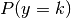
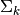
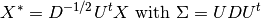

1.2. 线性和二次判别分析（LDA 和 QDA）¶
线性判别分析 (discriminant_analysis.LinearDiscriminantAnalysis) 与 二次判别分析 (discriminant_analysis.QuadraticDiscriminantAnalysis)
是两个经典的分类器。就像它们的名字所暗示的那样，LDA产生线性决策面，QDA产生二次决策面。
这些分类器有相当的吸引力，因为它们具有易于计算的解析解(closed-form solutions)而且还是天 生的多类分类器，已经被证明在实践中工作的很好而且没有需要小心调节的超参数。

上图展示了LDA和QDA的决策边界。此图通过对比说明了LDA只能学习到线性边界， QDA则可以学习到二次边界而且其边界也因此更有弹性。
例子:
Linear and Quadratic Discriminant Analysis with confidence ellipsoid : LDA和QDA在人工合成的数据集上的对比
1.2.1. LDA 用于维数约简¶
discriminant_analysis.LinearDiscriminantAnalysis 可以被用于执行有监督的维数约简操作。
其原理是将输入数据投影到线性子空间中。该线性子空间是由能够最大化类间分离性的那些方向所张成
(在下面的数学表述小结中将更精确的讨论此问题)。
输出的维数必需小于类的数量,所以此方法是一个普遍来说比较强的降维方法而且仅仅在多类问题中才有使用的意义。
discriminant_analysis.LinearDiscriminantAnalysis.transform函数实现了LDA维数约简。
我们想要的维数大小可以通过构造器参数n_components来设置。这一参数的设置不会影响
discriminant_analysis.LinearDiscriminantAnalysis.fit
和discriminant_analysis.LinearDiscriminantAnalysis.predict.
例子:
Comparison of LDA and PCA 2D projection of Iris dataset: 在Iris数据集上对比LDA和PCA的维数约简功能
1.2.2. LDA分类器与QDA分类器的数学表述¶
LDA和QDA都可以从简单的概率模型推导出来。此简单概率模型为每一个类
 建立其数据的类条件概率分布：
建立其数据的类条件概率分布：
 。一旦为所有类都建立上述条件概率模型后，就可以使用Bayes决策规则进行预则：
。一旦为所有类都建立上述条件概率模型后，就可以使用Bayes决策规则进行预则：

更具体地说，对于线性和二次判别分析来说，类条件概率密度函数
 被建模为多变量高斯分布的形式：
被建模为多变量高斯分布的形式：

想要使用此模型作为分类器，我们只需要从训练数据中估计出每个类的先验概率

(通常是训练集中类
的样本所占的比例),
类均值
(通常取为该类所有样本上计算出的经验均值)
以及协方差矩阵 (通常取为从该类样本上得到的经验协方差；或者是使用一个正则化估计器
请看下面的 shrinkage 小节).
在LDA中, 所有类的高斯分布被假定为具有相同的协方差矩阵:
 对所有的类
都成立。
这个假设将会导致一个线性决策面，通过对比对数概率比(the log-probability ratios)
就可以看到这一点：
对所有的类
都成立。
这个假设将会导致一个线性决策面，通过对比对数概率比(the log-probability ratios)
就可以看到这一点：
在QDA中，没有对各个类的高斯分布的协方差矩阵 做任何假设。这导致了一个二次决策面，详情请看[3]。
Note
与高斯朴素分类器的关系
如果我们假定在QDA模型中协方差矩阵是对角阵，那么这意味着我们假定了所有类都是条件独立的。
而且由此产生的分类器就与高斯朴素贝叶斯分类器是等价的
naive_bayes.GaussianNB。
1.2.3. LDA维数约简的数学表述¶
为了理解LDA在维数约简中的使用，我们要从几何角度重新解释和表述上述的LDA分类器规则。
我们把所有类的数量记为 既然我们已经假定在LDA中所有类的样本上估计出的各自的协方差矩阵是相等的
既然我们已经假定在LDA中所有类的样本上估计出的各自的协方差矩阵是相等的
 ,
那么我们就可以重新调正样本数据的尺度使得这个协方差矩阵变为单位矩阵：
,
那么我们就可以重新调正样本数据的尺度使得这个协方差矩阵变为单位矩阵：

当所有类的数据被重调尺度后对一个数据点的分类就等价于在欧氏空间中找到一个距离该点最近的类均值 并认为该点就属于那个最近的类均值所代表的类。但是，这种方法只有在投影到由所有类的均值向量
所张成的
并认为该点就属于那个最近的类均值所代表的类。但是，这种方法只有在投影到由所有类的均值向量
所张成的 维仿射子空间
上才可以工作的很好。这就表明在LDA中隐含了一个将原始数据线性投影到
维空间的维数约简操作。
维仿射子空间
上才可以工作的很好。这就表明在LDA中隐含了一个将原始数据线性投影到
维空间的维数约简操作。
我们还可以约减更多的维数：选择一个 ，
然后将数据投影到一个线性子空间
，
然后将数据投影到一个线性子空间  最大化投影以后的的方差。
(从效果上说，我们是在对投影变换后的类均值做PCA变换)
这个
对应于成员方法
最大化投影以后的的方差。
(从效果上说，我们是在对投影变换后的类均值做PCA变换)
这个
对应于成员方法discriminant_analysis.LinearDiscriminantAnalysis.transform的参数n_components。
详情请看[3]。
1.2.4. 缩减(Shrinkage)¶
Shrinkage 是一个用来在训练样本数目相对于特征数量比较少的情况下提升协方差估计质量的工具。
在这种情形下，经验样本协方差是一个比较差的估计。
Shrinkage LDA 可以通过设置discriminant_analysis.LinearDiscriminantAnalysis
类的shrinkage 参数为‘auto’来使用。
This automatically determines the optimal shrinkage parameter in an analytic
way following the lemma introduced by Ledoit and Wolf [4]. Note that
currently shrinkage only works when setting the solver parameter to ‘lsqr’
or ‘eigen’.
The shrinkage parameter can also be manually set between 0 and 1. In
particular, a value of 0 corresponds to no shrinkage (which means the empirical
covariance matrix will be used) and a value of 1 corresponds to complete
shrinkage (which means that the diagonal matrix of variances will be used as
an estimate for the covariance matrix). Setting this parameter to a value
between these two extrema will estimate a shrunk version of the covariance
matrix.
1.2.5. 估计算法¶
默认求解器(solver)是‘svd’，既可用于分类也可用于数据的维数约简变换。 而且它不依赖于协方差矩阵的计算。然而，求解器‘svd’无法与shrinkage共同使用。
求解器‘lsqr’是一个只能用来分类的高效算法，而且可以支持shrinkage。
求解器 ‘eigen’ 是通过优化类间散布与类内散布的比率来工作。它既可用于分类也可用于数据的维数约简变换 而且支持 shrinkage。 然而, 求解器‘eigen’ 需要计算协方差矩阵, 所以它不适合用在当特征数量比较多的情况。
例子:
Normal and Shrinkage Linear Discriminant Analysis for classification: 带shrinkage和不带shrinkage的LDA分类器的比较。